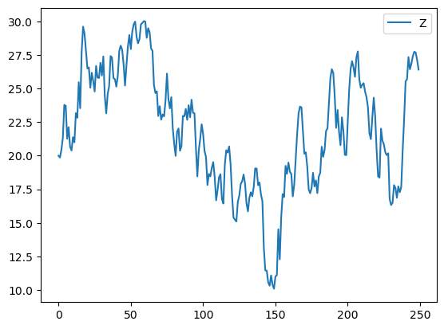

Forbidden z region#
import molsysmt as msm
import openmm as mm
from openmm import unit
from openmm import app
from tqdm import tqdm
import numpy as np
from matplotlib import pyplot as plt
system = mm.System()
system.addParticle(39.948 * unit.amu) # masa del átomo de argón
0
msm.thirds.openmm.forces.forbidden_z_region(system, force_constant = '500 kilojoules/(mol*angstroms**2)',
pbc=True, adding_force=True)
0
# Formalismo NVT
temperature = 300*unit.kelvin
pressure = None
integration_timestep = 2.0*unit.femtoseconds
saving_timestep = 1.00*unit.picoseconds
simulation_time = 250.*unit.picoseconds
saving_steps = int(saving_timestep/integration_timestep)
num_saving_steps = int(simulation_time/saving_timestep)
friction = 5.0/unit.picoseconds
integrator = mm.LangevinIntegrator(temperature, friction, integration_timestep)
platform = mm.Platform.getPlatformByName('CPU')
times = np.zeros(num_saving_steps, np.float32) * unit.picoseconds
positions = np.zeros([num_saving_steps,3], np.float32) * unit.angstroms
velocities = np.zeros([num_saving_steps,3], np.float32) * unit.angstroms/unit.picosecond
potential_energies = np.zeros([num_saving_steps], np.float32) * unit.kilocalories_per_mole
kinetic_energies = np.zeros([num_saving_steps], np.float32) * unit.kilocalories_per_mole
initial_positions = [[0.0, 0.0, 2.0]] * unit.nanometers
context = mm.Context(system, integrator, platform)
context.setPositions(initial_positions)
L = 4.0
v1 = [L,0,0] * unit.nanometers
v2 = [0,L,0] * unit.nanometers
v3 = [0,0,L] * unit.nanometers
L = L * unit.nanometers
context.setPeriodicBoxVectors(v1, v2, v3)
state = context.getState(getEnergy=True, getPositions=True, getVelocities=True)
times[0] = state.getTime()
positions[0] = state.getPositions()[0]
velocities[0] = state.getVelocities()[0]
kinetic_energies[0]=state.getKineticEnergy()
potential_energies[0]=state.getPotentialEnergy()
for ii in tqdm(range(1,num_saving_steps)):
context.getIntegrator().step(saving_steps)
state_xx = context.getState(getEnergy=True, getPositions=True, getVelocities=True)
times[ii] = state_xx.getTime()
positions[ii] = state_xx.getPositions()[0]
velocities[ii] = state_xx.getVelocities()[0]
kinetic_energies[ii]=state_xx.getKineticEnergy()
potential_energies[ii]=state_xx.getPotentialEnergy()
0%| | 0/249 [00:00<?, ?it/s]
1%| | 2/249 [00:00<00:19, 12.58it/s]
2%|▏ | 4/249 [00:00<00:18, 12.94it/s]
2%|▏ | 6/249 [00:00<00:18, 12.93it/s]
3%|▎ | 8/249 [00:00<00:18, 12.89it/s]
4%|▍ | 10/249 [00:00<00:18, 12.95it/s]
5%|▍ | 12/249 [00:00<00:18, 13.00it/s]
6%|▌ | 14/249 [00:01<00:18, 12.99it/s]
6%|▋ | 16/249 [00:01<00:18, 12.93it/s]
7%|▋ | 18/249 [00:01<00:17, 12.91it/s]
8%|▊ | 20/249 [00:01<00:17, 12.86it/s]
9%|▉ | 22/249 [00:01<00:17, 12.93it/s]
10%|▉ | 24/249 [00:01<00:17, 12.96it/s]
10%|█ | 26/249 [00:02<00:17, 12.94it/s]
11%|█ | 28/249 [00:02<00:17, 12.99it/s]
12%|█▏ | 30/249 [00:02<00:16, 13.01it/s]
13%|█▎ | 32/249 [00:02<00:16, 12.97it/s]
14%|█▎ | 34/249 [00:02<00:16, 12.83it/s]
14%|█▍ | 36/249 [00:02<00:16, 12.85it/s]
15%|█▌ | 38/249 [00:02<00:16, 12.92it/s]
16%|█▌ | 40/249 [00:03<00:16, 12.96it/s]
17%|█▋ | 42/249 [00:03<00:15, 13.02it/s]
18%|█▊ | 44/249 [00:03<00:15, 13.11it/s]
18%|█▊ | 46/249 [00:03<00:15, 13.06it/s]
19%|█▉ | 48/249 [00:03<00:15, 13.08it/s]
20%|██ | 50/249 [00:03<00:15, 13.05it/s]
21%|██ | 52/249 [00:04<00:15, 13.04it/s]
22%|██▏ | 54/249 [00:04<00:14, 13.05it/s]
22%|██▏ | 56/249 [00:04<00:14, 12.99it/s]
23%|██▎ | 58/249 [00:04<00:14, 12.98it/s]
24%|██▍ | 60/249 [00:04<00:14, 12.97it/s]
25%|██▍ | 62/249 [00:04<00:14, 12.96it/s]
26%|██▌ | 64/249 [00:04<00:14, 12.97it/s]
27%|██▋ | 66/249 [00:05<00:14, 12.98it/s]
27%|██▋ | 68/249 [00:05<00:14, 12.91it/s]
28%|██▊ | 70/249 [00:05<00:13, 12.93it/s]
29%|██▉ | 72/249 [00:05<00:13, 12.86it/s]
30%|██▉ | 74/249 [00:05<00:13, 12.91it/s]
31%|███ | 76/249 [00:05<00:13, 13.05it/s]
31%|███▏ | 78/249 [00:06<00:12, 13.33it/s]
32%|███▏ | 80/249 [00:06<00:12, 13.25it/s]
33%|███▎ | 82/249 [00:06<00:12, 13.29it/s]
34%|███▎ | 84/249 [00:06<00:12, 13.28it/s]
35%|███▍ | 86/249 [00:06<00:12, 13.18it/s]
35%|███▌ | 88/249 [00:06<00:12, 13.15it/s]
36%|███▌ | 90/249 [00:06<00:12, 13.11it/s]
37%|███▋ | 92/249 [00:07<00:11, 13.12it/s]
38%|███▊ | 94/249 [00:07<00:11, 13.09it/s]
39%|███▊ | 96/249 [00:07<00:11, 13.04it/s]
39%|███▉ | 98/249 [00:07<00:11, 13.04it/s]
40%|████ | 100/249 [00:07<00:11, 12.83it/s]
41%|████ | 102/249 [00:07<00:11, 12.90it/s]
42%|████▏ | 104/249 [00:07<00:11, 12.95it/s]
43%|████▎ | 106/249 [00:08<00:10, 13.02it/s]
43%|████▎ | 108/249 [00:08<00:10, 12.97it/s]
44%|████▍ | 110/249 [00:08<00:10, 13.01it/s]
45%|████▍ | 112/249 [00:08<00:10, 12.95it/s]
46%|████▌ | 114/249 [00:08<00:10, 13.00it/s]
47%|████▋ | 116/249 [00:08<00:10, 13.08it/s]
47%|████▋ | 118/249 [00:09<00:10, 13.05it/s]
48%|████▊ | 120/249 [00:09<00:09, 13.04it/s]
49%|████▉ | 122/249 [00:09<00:09, 13.07it/s]
50%|████▉ | 124/249 [00:09<00:09, 12.92it/s]
51%|█████ | 126/249 [00:09<00:09, 12.83it/s]
51%|█████▏ | 128/249 [00:09<00:09, 12.85it/s]
52%|█████▏ | 130/249 [00:10<00:09, 12.92it/s]
53%|█████▎ | 132/249 [00:10<00:09, 12.93it/s]
54%|█████▍ | 134/249 [00:10<00:08, 13.01it/s]
55%|█████▍ | 136/249 [00:10<00:08, 13.08it/s]
55%|█████▌ | 138/249 [00:10<00:08, 13.00it/s]
56%|█████▌ | 140/249 [00:10<00:08, 12.98it/s]
57%|█████▋ | 142/249 [00:10<00:08, 12.93it/s]
58%|█████▊ | 144/249 [00:11<00:08, 13.01it/s]
59%|█████▊ | 146/249 [00:11<00:07, 13.04it/s]
59%|█████▉ | 148/249 [00:11<00:07, 13.06it/s]
60%|██████ | 150/249 [00:11<00:07, 13.00it/s]
61%|██████ | 152/249 [00:11<00:07, 13.00it/s]
62%|██████▏ | 154/249 [00:11<00:07, 13.01it/s]
63%|██████▎ | 156/249 [00:12<00:07, 12.93it/s]
63%|██████▎ | 158/249 [00:12<00:07, 12.88it/s]
64%|██████▍ | 160/249 [00:12<00:06, 12.97it/s]
65%|██████▌ | 162/249 [00:12<00:06, 12.98it/s]
66%|██████▌ | 164/249 [00:12<00:06, 12.31it/s]
67%|██████▋ | 166/249 [00:12<00:06, 12.51it/s]
67%|██████▋ | 168/249 [00:12<00:06, 12.62it/s]
68%|██████▊ | 170/249 [00:13<00:06, 12.69it/s]
69%|██████▉ | 172/249 [00:13<00:06, 12.79it/s]
70%|██████▉ | 174/249 [00:13<00:05, 12.84it/s]
71%|███████ | 176/249 [00:13<00:05, 12.77it/s]
71%|███████▏ | 178/249 [00:13<00:05, 12.71it/s]
72%|███████▏ | 180/249 [00:13<00:05, 12.72it/s]
73%|███████▎ | 182/249 [00:14<00:05, 12.86it/s]
74%|███████▍ | 184/249 [00:14<00:05, 12.86it/s]
75%|███████▍ | 186/249 [00:14<00:04, 12.90it/s]
76%|███████▌ | 188/249 [00:14<00:04, 12.96it/s]
76%|███████▋ | 190/249 [00:14<00:04, 12.93it/s]
77%|███████▋ | 192/249 [00:14<00:04, 12.93it/s]
78%|███████▊ | 194/249 [00:14<00:04, 12.89it/s]
79%|███████▊ | 196/249 [00:15<00:04, 13.07it/s]
80%|███████▉ | 198/249 [00:15<00:03, 13.10it/s]
80%|████████ | 200/249 [00:15<00:03, 12.96it/s]
81%|████████ | 202/249 [00:15<00:03, 12.86it/s]
82%|████████▏ | 204/249 [00:15<00:03, 12.93it/s]
83%|████████▎ | 206/249 [00:15<00:03, 12.88it/s]
84%|████████▎ | 208/249 [00:16<00:03, 12.93it/s]
84%|████████▍ | 210/249 [00:16<00:02, 13.05it/s]
85%|████████▌ | 212/249 [00:16<00:02, 13.04it/s]
86%|████████▌ | 214/249 [00:16<00:02, 13.02it/s]
87%|████████▋ | 216/249 [00:16<00:02, 12.97it/s]
88%|████████▊ | 218/249 [00:16<00:02, 12.99it/s]
88%|████████▊ | 220/249 [00:16<00:02, 12.99it/s]
89%|████████▉ | 222/249 [00:17<00:02, 12.98it/s]
90%|████████▉ | 224/249 [00:17<00:01, 13.04it/s]
91%|█████████ | 226/249 [00:17<00:01, 13.07it/s]
92%|█████████▏| 228/249 [00:17<00:01, 13.12it/s]
92%|█████████▏| 230/249 [00:17<00:01, 13.09it/s]
93%|█████████▎| 232/249 [00:17<00:01, 13.08it/s]
94%|█████████▍| 234/249 [00:18<00:01, 13.06it/s]
95%|█████████▍| 236/249 [00:18<00:00, 13.04it/s]
96%|█████████▌| 238/249 [00:18<00:00, 13.04it/s]
96%|█████████▋| 240/249 [00:18<00:00, 13.06it/s]
97%|█████████▋| 242/249 [00:18<00:00, 13.03it/s]
98%|█████████▊| 244/249 [00:18<00:00, 12.96it/s]
99%|█████████▉| 246/249 [00:18<00:00, 12.97it/s]
100%|█████████▉| 248/249 [00:19<00:00, 12.94it/s]
100%|██████████| 249/249 [00:19<00:00, 12.96it/s]
#plt.plot(positions[:,0], label='X')
#plt.plot(positions[:,1], label='Y')
plt.plot(positions[:,2], label='Z')
plt.legend()
plt.show()
